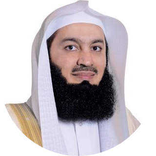

|  |
Mufti Ismail ibn Musa Menk |
Grand Mufti of Zimbabwe. And Head of the country's Fatwa department. |
Mufti Ismail Menk is a leading global Islamic scholar born and raised in Zimbabwe.
He completed his Hifdh and Qiraat at a young age whilst also learning Arabic and Urdu
and studied under his father. He went on to graduate in Islamic Studies at the University
of Madina and became Mufti after extensive study at Darul Uloom Kantharia in Gujarat.| Other names | Mufti Menk |
| Born | June 27, 1975(age 45) Salisbury, Zimbabwe |
| Nationality | Zimbabwean |